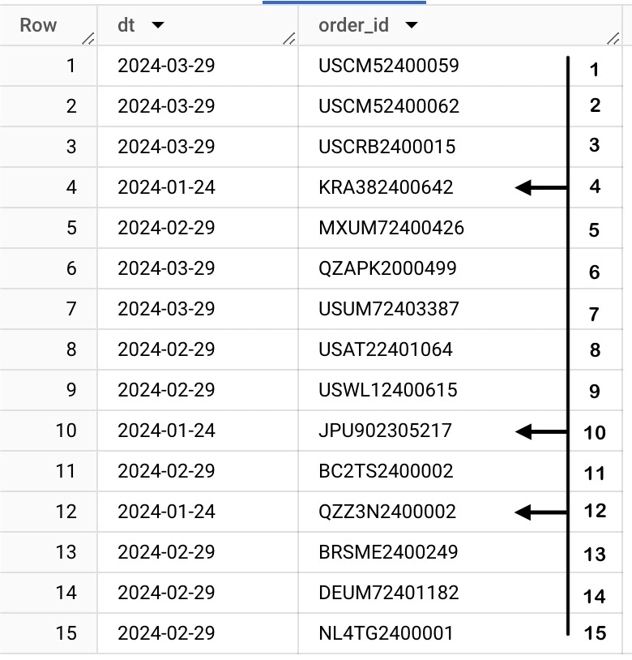

Maybe a few hundred years?
Bring in a computer and it should still take a few hours to traverse through all these records.
Companies like Amazon, Meta, PhonePe, Google etc churn out a few billion records of data every day. That is because of the extensive user base who use these products.
With such large data comes the requirement of large computing power to retrieve them and that always comes with a dollar cost $$ for the company.
The only alternative being, reduce the computation required. And this is where optimisation comes into picture.
Optimisation Methods
1. Partitioning a Table
What is partitioning?
By definition, partitioning is to segregate items into folders.
Ex: If you are a teacher, you would segregate each Student’s records into separate folders so that it can be fetched easily. The process is similar here.
Let's understand it through an example.
Problem Statement: Given the Order list, fetch all the orders that were executed in January of 2024
Given below are two data tables of the same data
Case 1 : Non Partitioned Dataset

If you had to fetch the Orders from Jan 2024, you would have to traverse through all the 15 records and your output is 3 records. This will be 15 units of effort, i.e reading each line is one unit of effort.
Case 2 : Partitioned Data

If you see each Record is put into folders i.e year and month.
Considering that everything is in ascending order, your eyes will scroll down to 2024, then January and finally the records against it. There is absolutely no necessity for you to look at other years like 2023 or other months like February and March. This is essentially 3 units of effort against case 1 where it is 15 units.
The entire computation is down by 80%. This is how optimisation works. Using a partition where clause to only fetch the records needed in the output, reduces the computation power and also the time taken for the query to run.
Now when you scale this to say 1 TB of available data, you only end up processing 200GB of data or lesser (basis use case) and save on computation and time.